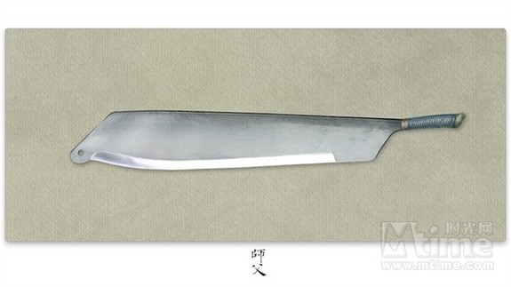
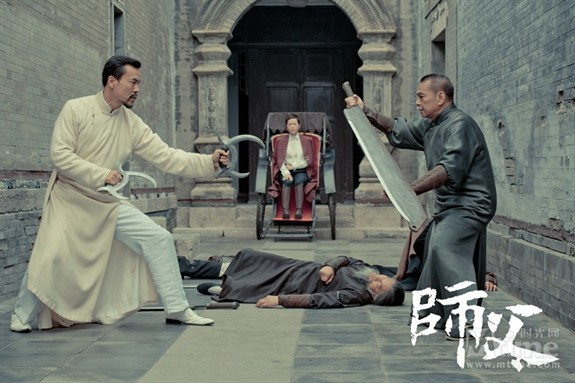

四： 战身刀
电影中制服陈识的四把“大铡刀”，最后巷战中又被陈识 一 一 击破，这柄刀叫做战身刀，八卦门的独门兵器，用徐浩峰的话来说：“其实就是铡刀”。战身刀身形巨大，几乎有一人之高，重量可观。徐浩峰在《武士会》中曾仔细描述过战身刀，使用者必须拥有充沛的腰力，一手扶持刀柄，一手托着刀背，以腰力补充，托扶铡刀成就拳劲，刀身也可以当做盾牌，叫“刀背藏身”。

战身刀使用并不是如其他刀械那样劈砍，而是当“跷跷板”用，对方打刀这一头，一头沉下去，另一头就翘起来，用刀的高手收回来一抹才是杀人技。久而久之加以结合挪动步法养成，可弥补重量带来的速度限制。战身刀对八卦刀，相当于卡车遭遇小摩托，打在战身刀上，好似指挥对方的刀打自己。破解方式只能卸其兵刃，但八卦刀的刀镡钩太小，所以陈识在战斗途中换了兵器，才能击败以陈观泰为首的战身刀队。

值得一提的是，陈观泰是大圣劈挂门的高手，融合了猴拳、劈挂拳、形意拳精华等所创。钱小豪、钱嘉乐、白彪与他属同一门派，目前掌门人为其师弟黄秋生。